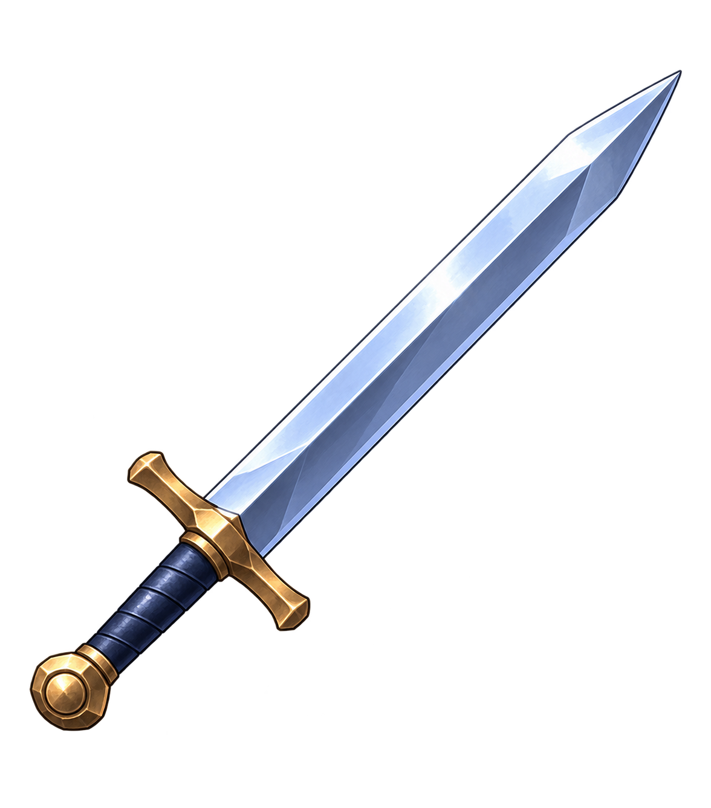
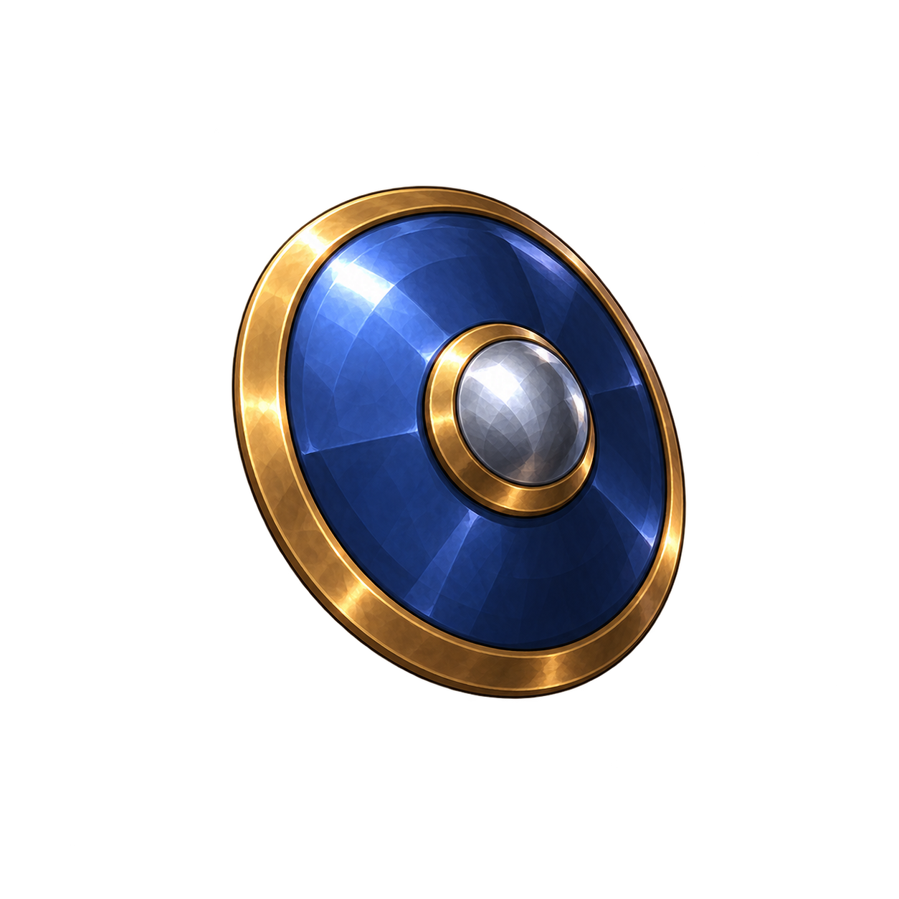
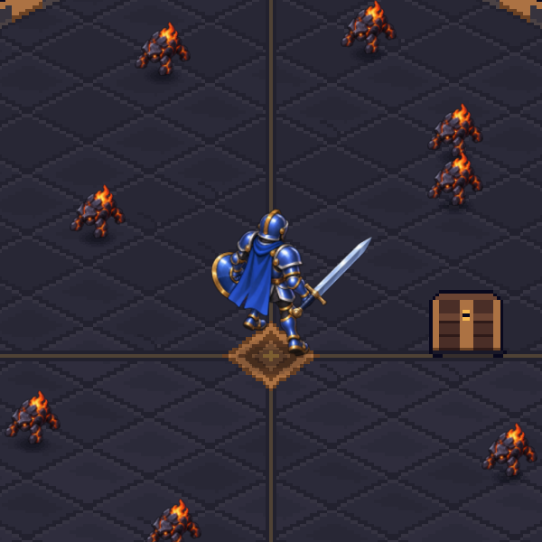
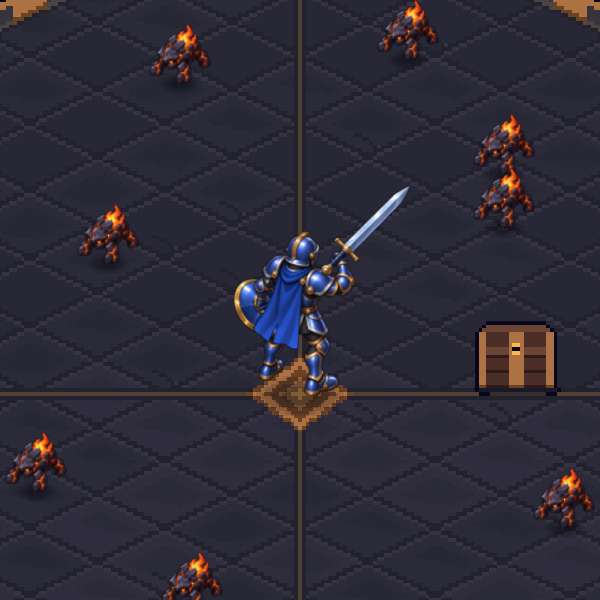
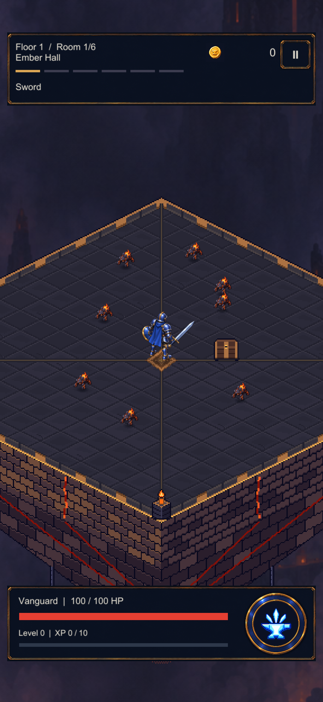

One knight. A matching loadout.
Original sword and buckler, two alternating step candidates and one attack windup, compared in the actual Unity room.
Rough animation blocking · not installedUnity pose preview
Rest pose with independent equipment layers. Actual 600×600 Unity render, 120 source pixels per world unit.
Shared materials
Broad silver blade, navy grip and compact blue-steel buckler with brass trim. Equipment remains separate from the body.


Step A and corrected Step B alternate the legs. The first B attempt repeated the same footfall and was rejected.
These are rough keyposes. Foot contact, passing poses and attack recovery still need cleanup before runtime integration.
Generated transparent masters are preserved unchanged. Preview rendering uses the 128-PPU candidate; shipped actors remain unchanged.
Pose registration
A shared canvas and pivot preserve the body's scale. Hands use measured per-pose anchors; the windup is deliberately shown as a separate pose, not advertised as a completed attack.


Room scale

Frozen Unity staging with eight Mites and real HUD/environment, isolated test profile. No live combat, enemy bars or device performance measurement.